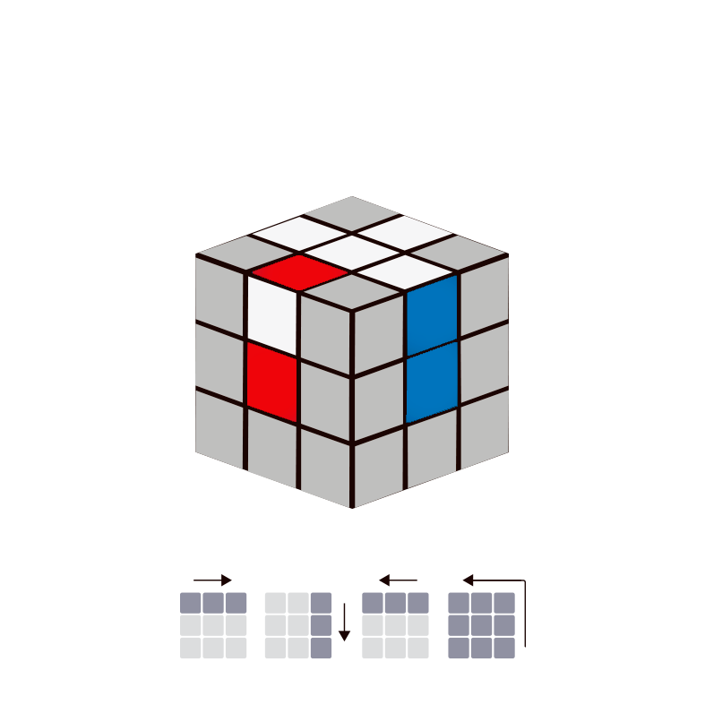

Movimientos
Movimiento U’ R’ U F’
Movimiento F’ U’ R U

Movimiento U’ R U

Primer paso: La cruz
En este primer paso realizaremos la cruz, no basta con la cruz blanca, el color lateral de las aristas tiene que coincidir con el color de la pieza central de las caras laterales.
Para realizar la cruz el mejor método es la lógica y mediante algoritmos:
| Movimiento | Caso |
|---|---|
Movimiento U’ R’ U F’ |
 |
Movimiento F’ U’ R U |
|
Movimiento U’ R U |
|